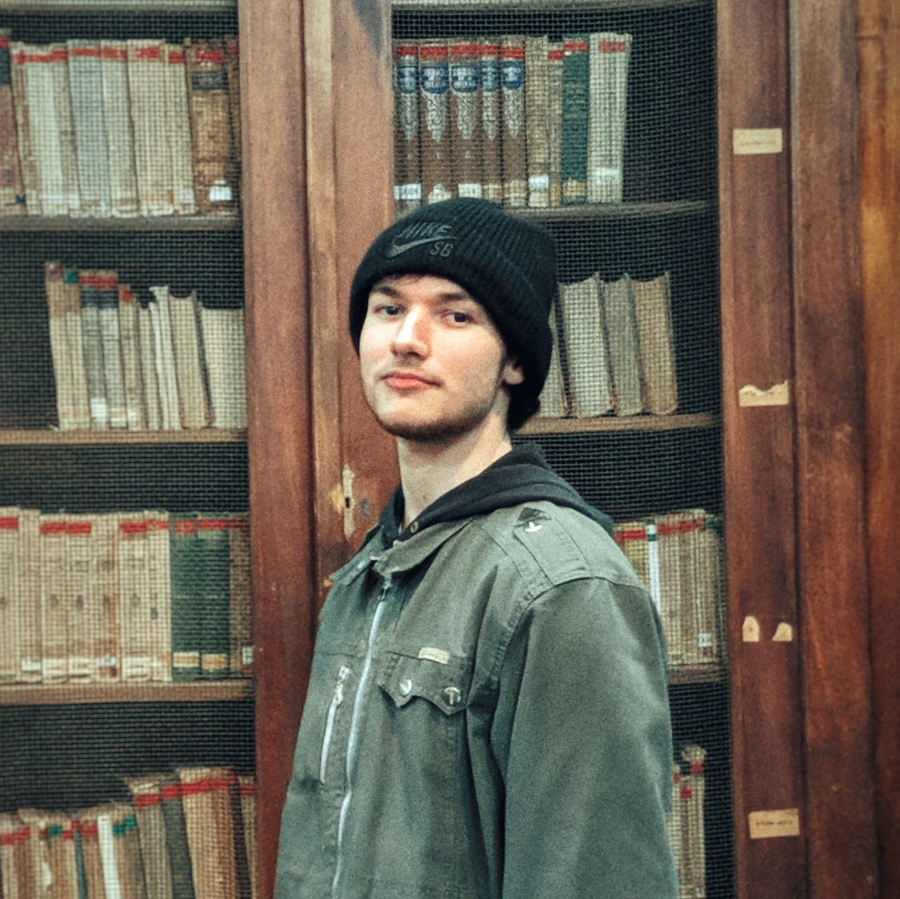

Me llamo Walter, me gusta lo relacionado a la informática, tecnologia, ciencia, astronomia y la naturaleza, amo cuando se combinan ♥.
Estudio Profesional:
● Técnico constructor Nacional recibido de la escuela industrial superior UNL - ARG.
- Diseño, planeamiento y dirección de un edificio de hasta 3 pisos con azotea.
● Estudiante Ingenieria en Informática en la facultad de ingenieria y ciencias hídricas UNL - ARG.
- Lenguajes: UML, C++, JAVA, Prolog, Racket, Octave.
Estudio independiente:
● Desarrollo web (html, css, javascript)
● Desarrollo de videojuegos (Unity-c#)
Otras aptitudes:
● Edición de videos e imágenes.
● I can talk in english too.
github - YouTube - SourceForge - Linkedin
Web creada con solo HTML5